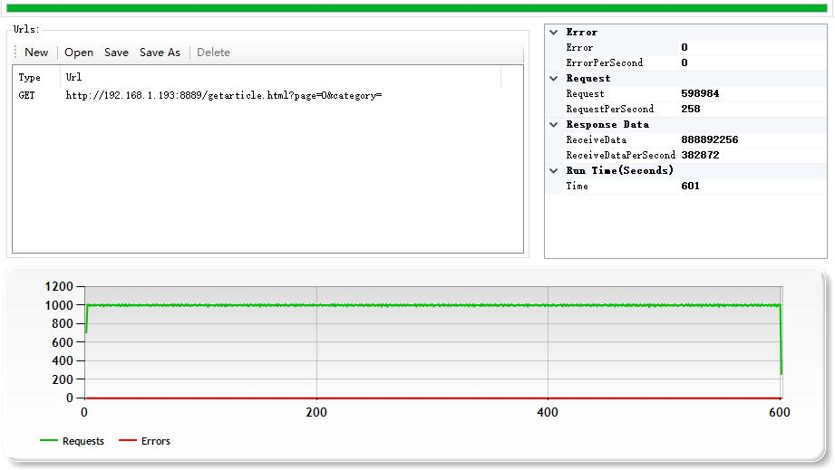
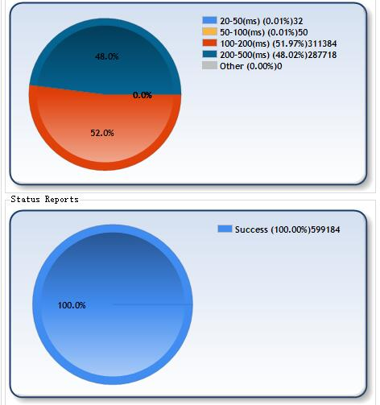
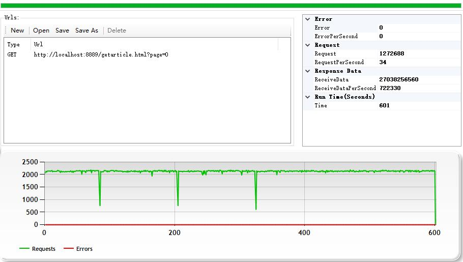
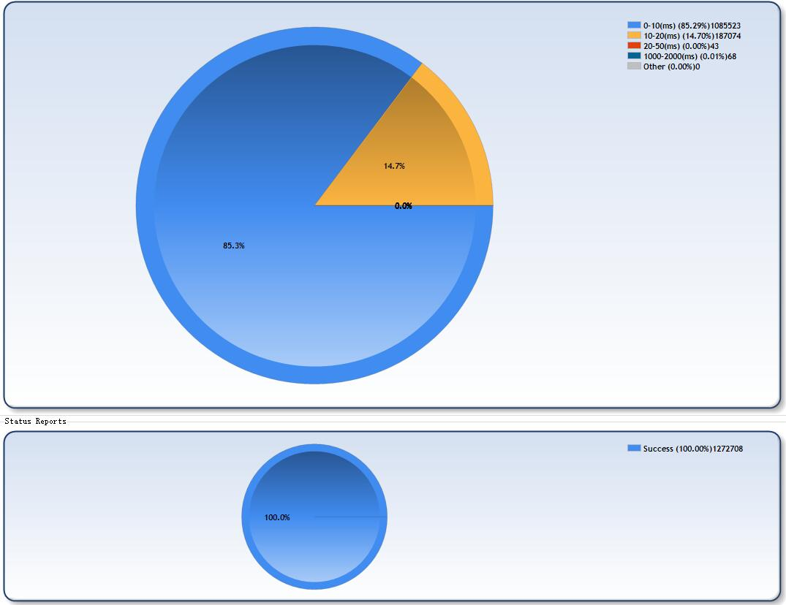
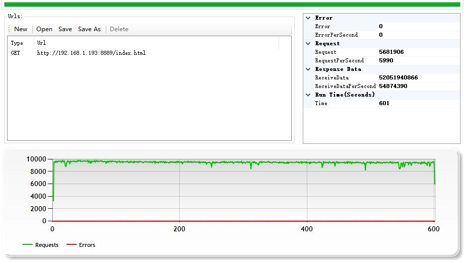
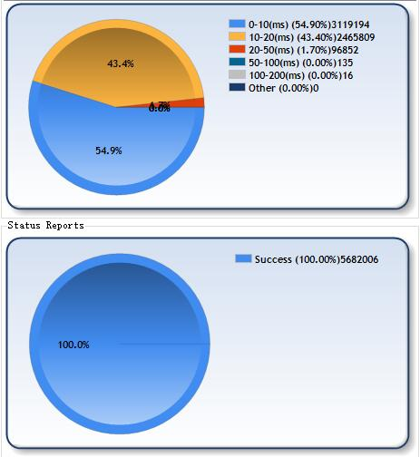

https://blog.xlang.link
首页
该博客是基于xlang开发的简单个人博客系统, 整体采用前后端分离的结构，服务器使用xlang开发，后端使用 xlang 语言 + MySql, 前端静态html页面使用html5js动态加载数据，可直接生成运行于windows、linux和macos上的可独立执行程序和服务程序，无需部署其他组件。
该博客系统提供文章发布管理、评论功能，并提供分类和隐私权限，文本编辑使用了HandyEditor控件，该控件提供可视化的文章编辑、文件上传等功能。
平台:windows 10（x64）
处理器:i7-4790k
内存:8G
业务:此博客系统
http服务器工作线程数:4
http服务端静态缓存:开启
数据库:Mysql 5.6
博客文章数量:500
测试时长:600秒/例
业务流程：访问httpservlet接口，从mysql数据库中拉取第一页（10个）博客文章数据,（总文章数500，模拟用户数500）；


测试结果:每秒处理请求数稳定在1000上下，无较大浮动，响应时间分布在100-500ms，100%成功。
访问httpservlet接口，从mysql数据库中拉取第一页（20个）博客文章数据,（总文章数15，模拟用户数20）；


测试结果:每秒处理请求数稳定在2000上下，无较大浮动，响应时间分布在0-20ms，100%成功。
访问静态页面


测试结果:每秒处理请求数稳定在10000上下，无较大浮动，响应时间分布在0-20ms，100%成功。
具体配置请查看源码: https://github.com/ixlang 或者访问官方博客 https://blog.xlang.link .
- 开发者交流
E-Mail:Cadaqs@live.com